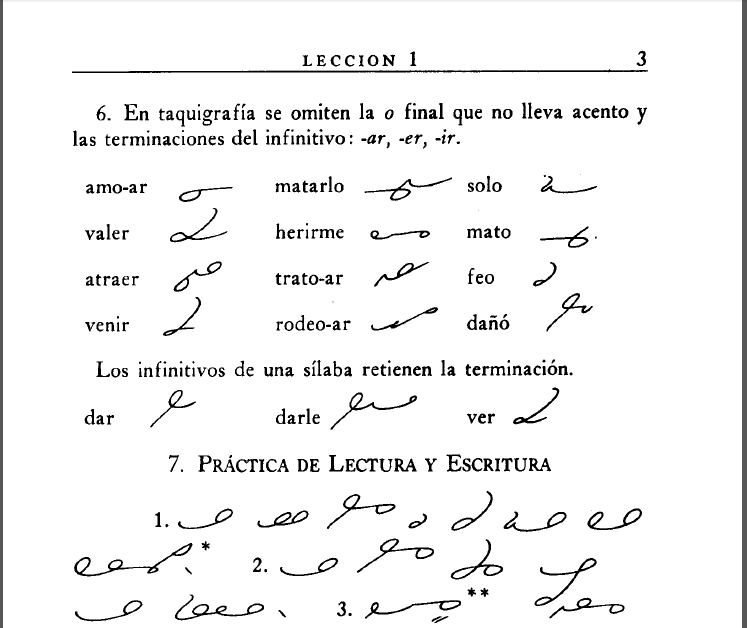

Prototypos buenos, bonitos, y baratos
Por Cecy Correa / @cecycorrea
Email: cecy@fourkitchens.com
Hola desde Monterrey, Mexico!
Casa de...
Gloria Trevi, cantante
Plastilina Mosh, grupo musical
Control Machete, groupo musical
Si señor!
Austin, Tejas
Donde vivo ahora.
Trabajo
Four Kitchens, Directora de Desarrollo de Negocios
Maestra
Agenda
- Que son "style tiles"?
- Que es Sass?
- Como puedes combinar style tiles y Sass
- Incorporar Sass en tu prototypo
Style tiles
Que son 'estail tails'
En vez de diseñar composiciones en Photoshop, puedes diseñar style tiles.
Una representacion abstracta del diseño web.
No más Photoshop!
Una version para cada dispositivo / monitor?
Diseño fluido
El enfoque es en elementos
En vez de enfocarte en el 'layout', enfocate en los elementos que juntos componen un systema de diseño.
Puedes definir letras, colores, texturas, y la combinacion de ellas.

Como diseñas un style tile?
Pues... en Photoshop?
También puedes diseńar en tu navegador!
Como?
Usando Sass!
Sass / Scss
Sass: Pre-procesador de CSS.

No es CSS!
Tienes que compilar tu Sass a CSS valido.
Si eres nuevo al lenguaje de Sass, puede ser un poco dificil empezar por que tienes que tener instalado...
- Ruby
- Compass
- Bower
Ruby
Sass es una gema de Ruby.
Mac: Buenas noticias si tienes Mac — Ruby ya viene con tu maquina!
Chequa tu version de Ruby. Necesitas tan siquiera 1.9.
$ ruby -vInstalar Sass
Es fácil!
$ gem install sassInstalar Compass
Compass: Te ayuda a compilar tu Sass a CSS automaticamente... pero tienes que usar la linea de comandos.
Pero es fácil de instalar!
$ gem install CompassVas a necesitar Bower!
Bower: Un administrador de paquetes, se encarga de que tengas las versiones correctas de tus lenguajes para tus proyectos.
Pero necesitas node.js para que Bower funcione...
Instalar Bower
Primero, instala node.js. Vé a nodejs.org y baja el paquete.
Con node ya instalado...
$ npm install g- bowerCompass y Codekit
Para compilar Sass, necesitas Compass y la linea de comandos...
Ó puedes instalar Codekit!
Codekit en un programa que se encarga de monitorear tus proyectos. Codekit puede compilar Sass automaticamente, sin la linea de comandos!
Alternativa PC: Scout.
Ya estas listo a usar Sass!
Pero para que?
Usando Sass, puedes diseñar style tiles para tus proyectos.
Y por que Sass te da archivos de CSS, puedes usar los mismos estilos en tu diseño!
ABC de Sass
Variables: Puedes usar variables para no tener que escribir el mismo código, y aprenderte valores de hex.
$color-primario: #0000ff;ABC de Sass
Cada vez que quieras usar ese color...
h1 { color: $color-primario; }Si el cliente quiere cambiar colores, nada mas tienes que cambiar $color-primario. Sass se encarga del resto.
ABC de Sass
Puedes extender estilos...
h2 { @extend h1; font-size: 1.5em; }En vez de escribir todo, puedes usar @extend.
ABC de Sass
Tambien hay 'Mixins.'
Mixins son buenos para crear 'sets' con estilos ó funcionalidad complicada.
Vamos a verlo en acción!
cecy.co/1ppr73X
Favor de dar click en "fork" para copiar el templete.
Ahora... Foundation!
Foundation: Un 'framework' de frontend.
Podemos usar Foundation para crear un prototipo basado en los style tiles.
Un templete basico de Foundation.
Un clon de Facebook en 10 minutos
Instala Foundation
$ gem install foundationYa instalado...
$ foundation new PROJECT_NAMEBower se va encargar de instalar la mas nueva version (con Sass!)

Asi puedes empezar a refinar tu diseño...
Todo sin abrir Photoshop!
Ligas!
- Templete Sass en Codepen: cecy.co/1ppr73X
- Otro templete Sass en Codepen: cecy.co/code-pen
- Prototipos en Dropbox: cecy.co/sass-protos
- Foundation theme para Drupal
- Charla de DrupalCamp PNW acerca de Foundation y Drupal